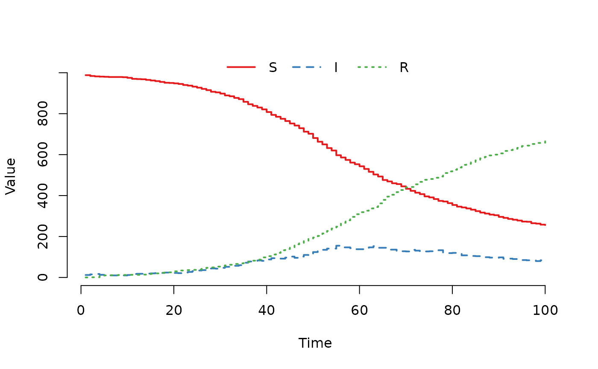
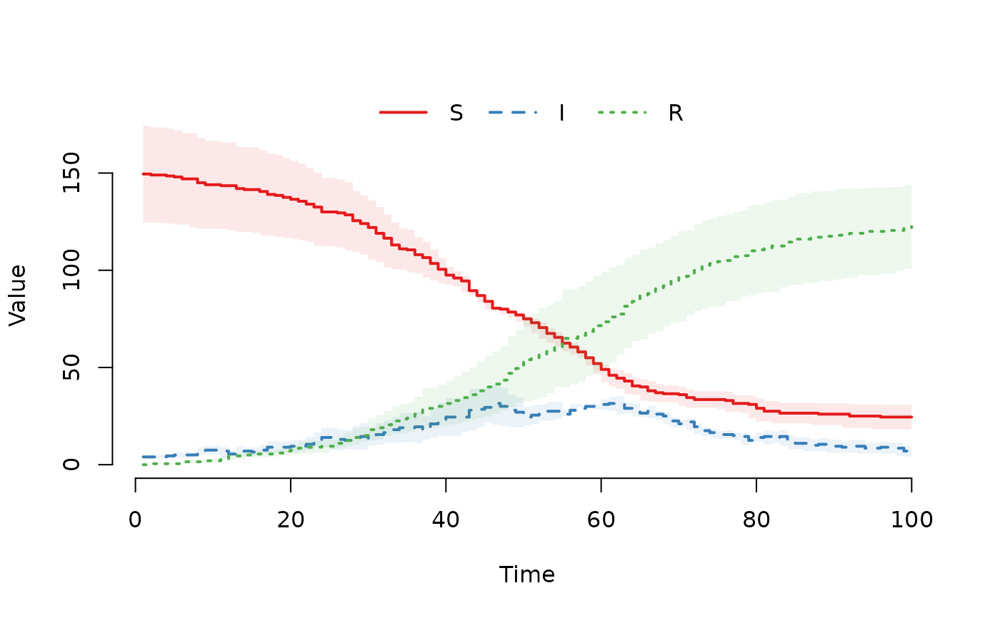

Replace the initial state vector (u0) of a
SimInf_model object with a new data.frame. This
allows you to modify the starting conditions of a model without
recreating the object.
Details
The value argument accepts a data.frame,
matrix, or named numeric vector. If the input is not
a data.frame, it will be automatically coerced to one. The
function handles the following formats:
Single Node: If
valueis a named vector or a one-row matrix/data.frame, it is applied to the single node in the model.Multiple Nodes: If
valueis a matrix or data.frame with multiple rows, each row corresponds to one node. The number of rows must exactly match the number of nodes in themodel.Column Matching: Column names must match the compartment names defined in the model (e.g.,
"S","I","R"). Only matching columns are used; extra columns are ignored, and missing compartments will trigger an error.
The function validates the input and ensures the new state is consistent with the model structure before updating.
Examples
## For reproducibility, set the seed.
set.seed(22)
## Create a single-node SIR model.
model <- SIR(
u0 = data.frame(
S = 99,
I = 1,
R = 0
),
tspan = 1:100,
beta = 0.16,
gamma = 0.077
)
## Update u0 using a named vector (automatically coerced to one
## row).
u0(model) <- c(
S = 990,
I = 10,
R = 0
)
result <- run(model)
plot(result)

## Create a multi-node model (2 nodes).
model_multi <- SIR(
u0 = data.frame(
S = c(100, 50),
I = c(1, 0),
R = c(0, 0)
),
tspan = 1:100,
beta = 0.16,
gamma = 0.077
)
## Update u0 using a data.frame with multiple rows.
u0(model_multi) <- data.frame(
S = c(200, 100),
I = c(5, 2),
R = c(0, 0)
)
result <- run(model_multi)
plot(result)
